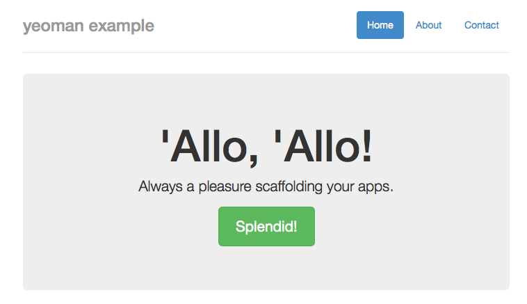

Yeoman
Yeoman (известный как yo) является инструментом скаффолдинга — с плагинами, известными как генераторы, Yeoman определяет как генерировать структуру проекта.
Чтобы использовать Yeoman, сначала его надо установить. Подобно всем пакетам npm мы можем выбрать, установить его глобально или в рамках нашего проекта. Но поскольку у нас ещё нет проекта, в этом случае имеет смысл установить глобально:
$ npm install -g yoДалее, мы устанавливаем генератор — поскольку для настройки Gulp+Bower мы использовали jQuery и Bootstrap, то можем воспользоваться предустановленным генератором gulp-webapp.
Опять же, установка производится с помощью npm:
$ npm install -g generator-gulp-webappПосле установки генератора создайте пустую папку в которой будет наш проект и внутри неё выполните:
$ cd my-yeoman-project
$ yo gulp-webappВначале будет выведен логотип Yeoman нарисованный символами ASCII, а затем спросят, какие библиотеки помимо HTML5 Boilerplate и jQuery вы хотели бы установить.
По умолчанию выбраны все дополнительные библиотеки. Чтобы снять галочку используйте клавиши управления курсором для выделения и нажмите пробел. Как только сделаете это, нажмите Enter... и на этом всё.
Теперь Yeoman сгенерирует gulpfile.js, настроит Bower с выбранными зависимостями и сделает заготовку нашего приложения.
После завершения папка нашего приложения будет выглядеть так:
├── app
│ ├── bower_components
│ │ ├── bootstrap-sass-official
│ │ ├── jquery
│ │ └── modernizr
│ ├── images
│ ├── scripts
│ │ └── main.js
│ ├── styles
│ │ ├── main.scss
│ │ └── main.css
│ ├── 404.html
│ ├── favicon.ico
│ ├── index.html
│ └── robots.txt
├── dist
│ ├── scripts
│ └── styles
├── node_modules
├── test
├── .bowerrc
├── .gitignore
├── bower.json
├── gulpfile.js
└── package.jsonС этого момента вы можете проверить результат генератора запустив gulp для построения всего необходимого, затем gulp serve для запуска веб-сервера на порту 9000.
Сделав это вы перейдёте на http://localhost:9000 и браузер покажет вам нечто подобное:

Другие генераторы
Всё это хорошо, но что если нам требуется создать новый проект основанный на фреймворке? Или с пользовательским скаффолдингом?
Вначале вы должны проверить, существует ли генератор, который отвечает вашим потребностям. Есть ряд официально поддерживаемых генераторов и более 800 неофициальных.
Не стоит беспокоиться, если вы создаёте плагин Wordpress или одностраничное приложение с помощью AngularJS, вероятнее, такой генератор уже сделан. Если нет, то вы создаёте свой собственный генератор.
Создание пользовательского генератора
Давайте сделаем генератор, который позволит нам создать скелет приложения с помощью Composer для ряда популярных фреймворков.
Для начала нужно будет использовать yeoman generator-generator — да, генератор для генерации генераторов (йо, чувак...):
$ npm install -g generator-generatorЗатем создайте папку для хранения вашего генератора, она должен быть названа generator- <имя>, в нашем случае мы собираемся создать папку с именем generator-php-composer.
Теперь мы можем использовать generator-generator для создания скелета нашего генератора:
$ mkdir generator-php-composer
$ cd generator-php-composer
$ yo generatorОтветьте на пару вопросов (имя пользователя на GitHub и имя генератора) и всё.
После завершения вы найдёте проект, который выглядит следующим образом:
├── app
│ ├── templates
│ └── index.js
├── node_modules
│ ├── chalk
│ ├── mocha
│ ├── yeoman-generator
│ └── yosay
├── test
│ ├── test-creation.js
│ └── test-load.js
├── README.md
└── package.jsonДовольно стандартный проект Node.js — наша папка приложение содержит сгенерированный код, также есть node_modules для пакетов npm с обязательным package.json для их управления, папка test и простой README.md.
Если мы перейдём к файлу app/index.js и откроем его, то увидим что он довольно простой:
- Импортировать все необходимые модули npm;
- Создать объект Generator — PhpComposerGenerator путём расширения yeoman.generators.Base;
- Определить ряд методов, которые выполняют конкретные задачи:
- init: вытянуть в package.json и зарегистрировать функцию обратного вызова для запуска bower и npm; завершить после установки всех прочих задач;
- askFor: запросить информацию у конечного пользователя;
- app: основные функции скаффолдинга;
- projectFiles: вспомогательные функции скаффолдинга;
- Окончательно, экспортировать генератор.
Yeoman будет выполнять каждый из заданных методов в порядке их определения и их имена не несут смыслового значения.
Для нашего генератора мы не собираемся использовать Bower или npm, так что обновим наш метод init для удаления функции обратного вызова. Кроме того, перенесём сюда наше приветствие:
init: function() {
// Yeoman приветствует пользователя.
this.log(yosay('Добро пожаловать в генератор PHP Framework Composer!'));
},Теперь обновим метод askFor для сбора некоторой информации от нашего пользователя.
askFor: function () {
var done = this.async();
var prompts = [{
name: "projectName",
message: "Имя проекта"
},
{
type: 'list',
name: 'skeleton',
message: 'Какой фреймворк вы хотели бы использовать?',
choices: [
"zendframework/skeleton-application",
"symfony/symfony-standard",
"laravel/laravel",
"silexphp/silex-skeleton",
"slim/slim-skeleton"
]
},
{
name: "dependencies",
message: "Добавить другую зависимость? (например: vendor/package:version)",
}];
this.prompt(prompts, function (props) {
this.skeleton = props.skeleton;
this.projectName = props.projectName;
this.dependencies = props.dependencies;
done();
}.bind(this));
},Здесь мы определяем три запроса:
- projectName — просто просит пользователя определить, где будет создан скелет приложения;
- skeleton — попросит пользователя выбрать скелет из списка;
- dependencies — спросит пользователя о других зависимостях, которые следует включить.
Вы могли также заметить первую строку нашего метода var done = this.async();. Это похоже на Gulp — позволяет создавать методы одновременно. Как только мы будем готовы перейти к следующей задаче мы вызываем done().
Наши запросы на данный момент весьма примитивны и им не хватает какой-либо проверки. Чтобы сделать это, мы просто добавим новый параметр validate который получает входное значение и возвращает true, если всё правильно или сообщение об ошибке, если неверно.
Запрос имени проекта нуждается в проверке, потому что входное значение является допустимым именем папки и она пока ещё не существует:
{
name: "projectName",
message: "Имя проекта",
validate: function(input) {
if (!/^[a-zA-Z\-0-9_]+$/.exec(input)) {
return "Неверное имя папки!";
}
if (fs.existsSync('./' + input)) {
return "Папка уже существует!";
}
return true;
}
}Наш запрос зависимостей должен проверить, что мы получили правильное имя пакета и версию. Кроме того, запрос позволяет указать только одну зависимость, а мы бы потенциально хотели добавить много. Мы можем переписать проверку и она продолжит спрашивать, пока пользователь не остановится. Для этого вначале добавим пустой массив вверху нашего метода askFor для хранения зависимостей:
askFor: function () {
var done = this.async();
var dependencies = [];
…{
name: "dependencies",
message: "Добавить другую зависимость? (например: vendor/package:version)",
validate: function(input) {
if (input.length == 0) {
return true;
}
if (!/^(.*)\/(.*):(.*)/.test(input)) {
return "Неверный пакет. Пожалуйста используйте формат: vendor/package:version";
}
dependencies.push(input);
return "Введите другую зависимость или просто нажмите Enter для продолжения";
}
}Код возвращает true, если пользователь ничего не ввёл, или будет проверять строку с пакетом и вернёт ошибку, если строка не соответствует требованиям.
Если пакет корректный, он будет добавлен в наш массив зависимостей и функция вернёт ошибку, которая указывает что должны ввести другую зависимость или нажать Enter для продолжения.
Окончательно устанавливаем this.dependencies в наш массив dependencies вместо props.dependencies (который должен быть пустым).
this.prompt(prompts, function (props) {
this.skeleton = props.skeleton;
this.projectName = props.projectName;
this.dependencies = dependencies;
done();
}.bind(this));Теперь, когда у нас есть пользовательский ввод, давайте создадим метод для вызова composer create-project.
Первое, что мы должны сделать, это импортировать метод child_process.exec(), чтобы могли запустить composer. Как и со всем импортом, мы добавляем следующий код в верхнюю часть index.js:
var exec = require('child_process').exec;Далее, создадим наш метод:
composerCreateProject: function() {
var done = this.async();
var cmd = "composer create-project " + this.skeleton + " " + this.projectName;
console.log("[" + chalk.yellow("Composer") + chalk.reset() + "] Создание проекта...")
exec(cmd, function (error) {
if (error) throw error;
console.log("[" + chalk.yellow("Composer") + chalk.reset() + "] Проект создан!");
done();
});
},Опять же, мы делаем наш метод асинхронным; это потому, что должны ждать команды завершения, прежде чем сможем добавить дополнительные зависимости.
Мы выводим сообщение о состоянии для пользователя с помощью console.log и используем chalk, чтобы сделать это красиво, затем выполняем composer create-project с помощью exec().
Наш вызов exec() включает в себя функцию обратного вызова, которая будет выводить ошибки или сообщение об успехе в консоль (снова используем console.log и chalk), а затем вызовет функцию done(), что позволит генератору двигаться дальше.
Наш конечный метод будет использовать composer require для добавления зависимостей:
composerAddDependencies: function() {
if (this.dependencies.length > 0) {
var dependencies = this.dependencies;
console.log("[" + chalk.yellow("Composer") + chalk.reset() + "] Добавляются зависимости...");
for (var i in dependencies) {
this._composerInstallDependency(dependencies[i]);
}
}
},
_composerInstallDependency: function(dependency) {
var done = this.async();
exec("composer require " + dependency, {cwd: this.projectName}, function (error) {
if (error) throw error;
console.log("[" + chalk.yellow("Composer") + chalk.reset() + "] Добавлено " + dependency);
done();
});
}Этот метод очень похож на наш метод composerCreateProject, за исключением того, что мы обходим массив this.dependencies и запускаем несколько команд.
Для обеспечения синхронного запуска мы создаём приватный метод _composerInstallDependency, который каждый раз будет синхронно запускать composer require.
Чтобы проверить наш генератор мы должны сказать npm где он живет; для этого запускаем npm link в корневой папке.
На данный момент наш генератор готов к запуску:
$ yo php-composerВы можете просмотреть полный код нашего генератора здесь.
Что дальше?
Теперь, когда ваш набор инструментов совместно работает с Bower, Gulp и Yeoman, вы вскоре можете начать автоматизировать окружение и развёртывание — в этом, в конце концов и весь смысл всего этого.

Все материалы сайта доступны по лицензии Creative Commons «Attribution-NonCommercial» («Атрибуция — Некоммерческое использование») 4.0 Всемирная, если не указано иное.